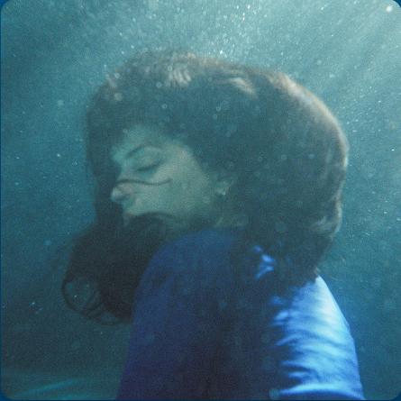

No One Noticed
THE MARÍAS
0:004:44
🔉
HTML made by SrYor
Maybe ITal vez yo
Lost my mindPerdí mi mente
No one noticedNadie se dio cuenta
No one noticedNadie se dio cuenta
It's getting old (I'd kinda like it if you'd call me)Se está pasando de moda (me gustaría que me llamaras)
All alone ('cause I'm so over bein' lonely)Completamente sola (porque estoy harta de estar sola)
May have lost it (I need a virtual connection)Tal vez he enloquecido (he hecho una conexión virtual)
What if I have lost it (be my video obsession)He enloquecido (sé mi obsesión por los videos)
No one triedNadie intento
To read my eyesLeer mis ojos
No one but youNadie excepto tú
Wish it weren't trueDesearía que no fuera verdad
Maybe I (I'd kinda like it if you'd call me)Tal vez yo (me gustaría que me llamaras)
It's not right ('cause I'm so over bein' lonely)No está bien (porque estoy harta de estar sola)
Make you mine (I need a virtual connection)Hacerte mío (he hecho una conexión virtual)
Take our time (be my video obsession)Tomarnos nuestro tiempo (sé mi obsesión por los videos)
Come on, don't leave me, it can't be that easy, babeVamos no me dejes no puede ser así de fácil, cariño
If you believe me, I guess I'll get on a planeSi me crees creo que iré en avión
Fly to your city excited to see your faceVolaré a tu ciudad emocionada de ver tu cara
Hold me, console me, and then I'll leave without a traceAbrázame, consuélame y me iré sin dejar rastro
Come on, don't leave me, it can't be that easy, babeVamos no me dejes no puede ser así de fácil, cariño
If you believe me, I guess I'll get on a planeSi me crees creo que iré en avión
Fly to your city excited to see your faceVolaré a tu ciudad emocionada de ver tu cara
Hold me, console me, then I'll leave without a traceAbrázame, consuélame y me iré sin dejar rastro
Come on, don't leave me, it can't be that easy, babeVamos no me dejes no puede ser así de fácil, cariño
If you believe me, I guess I'll get on a planeSi me crees creo que iré en avión
Fly to your city excited to see your faceVolaré a tu ciudad emocionada de ver tu cara
Hold me, console me, and then I'll leave without a trace (maybe I)Abrázame, consuélame y me iré sin dejar rastro (tal vez yo)
Come on, don't leave me, it can't be that easy, babe (it's not right)Vamos no me dejes no puede ser así de fácil, cariño (no está bien)
If you believe me, I guess I'll get on a plane (make you mine)Si me crees creo que iré en avión (hacerte mío)
Fly to your city excited to see your face (take our time)Volaré a tu ciudad emocionada de ver tu cara (tómate un tiempo)
Hold me, console me and then I'll leave without a traceAbrázame, consuélame y me iré sin dejar rastro
I'd kinda like it if you'd call me (it's not right)Me gustaría que me llamaras (no está bien)
'Cause I'm so over bein' lonely (make you mine)Porque estoy cansada de estar sola (hacerte mío)
I need a virtual connection (take our time)Necesito una conexión virtual (tomarnos nuestro tiempo)
Be my video obsessionSé mi obsesión por los videos
Estás tan dentro de míEstás, tan dentro de mí
Te sigo pensandoTe sigo pensando
Te sigo esperandoTe sigo esperando
Y estás, ohY estás, oh, tan lejos de mí, oh
Tan lejos de mí, ohTe sigo pensando
Te sigo pensandoMe canso llorando
Me canso, llorandoMe canso llorando